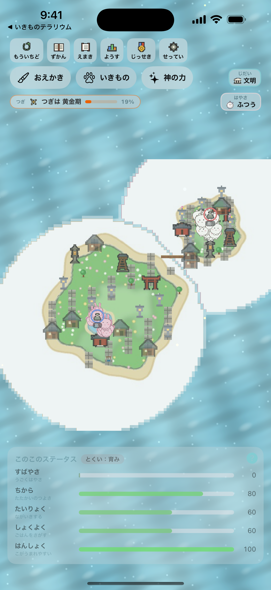
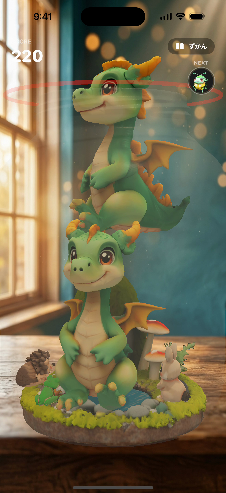
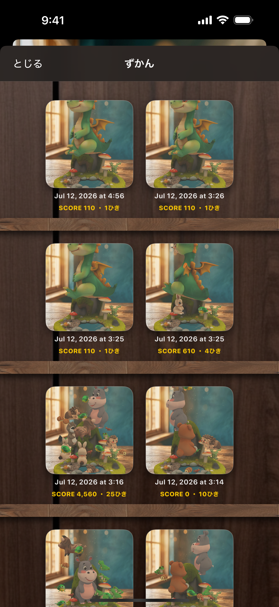
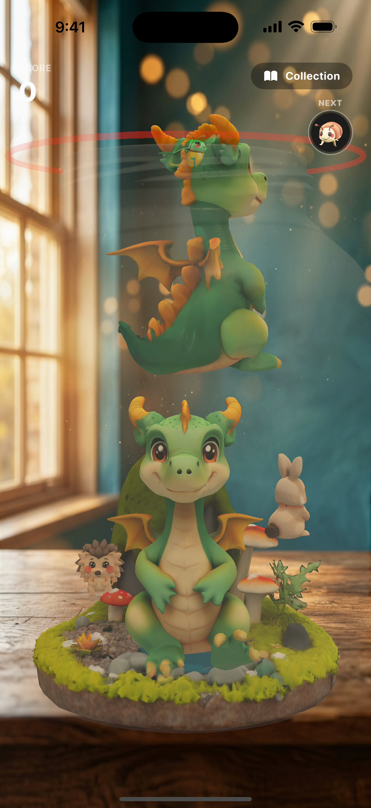
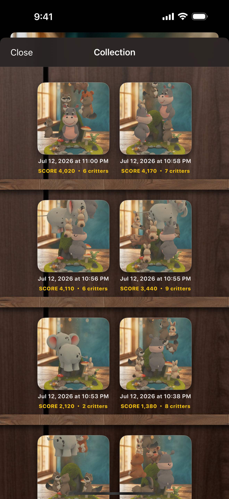
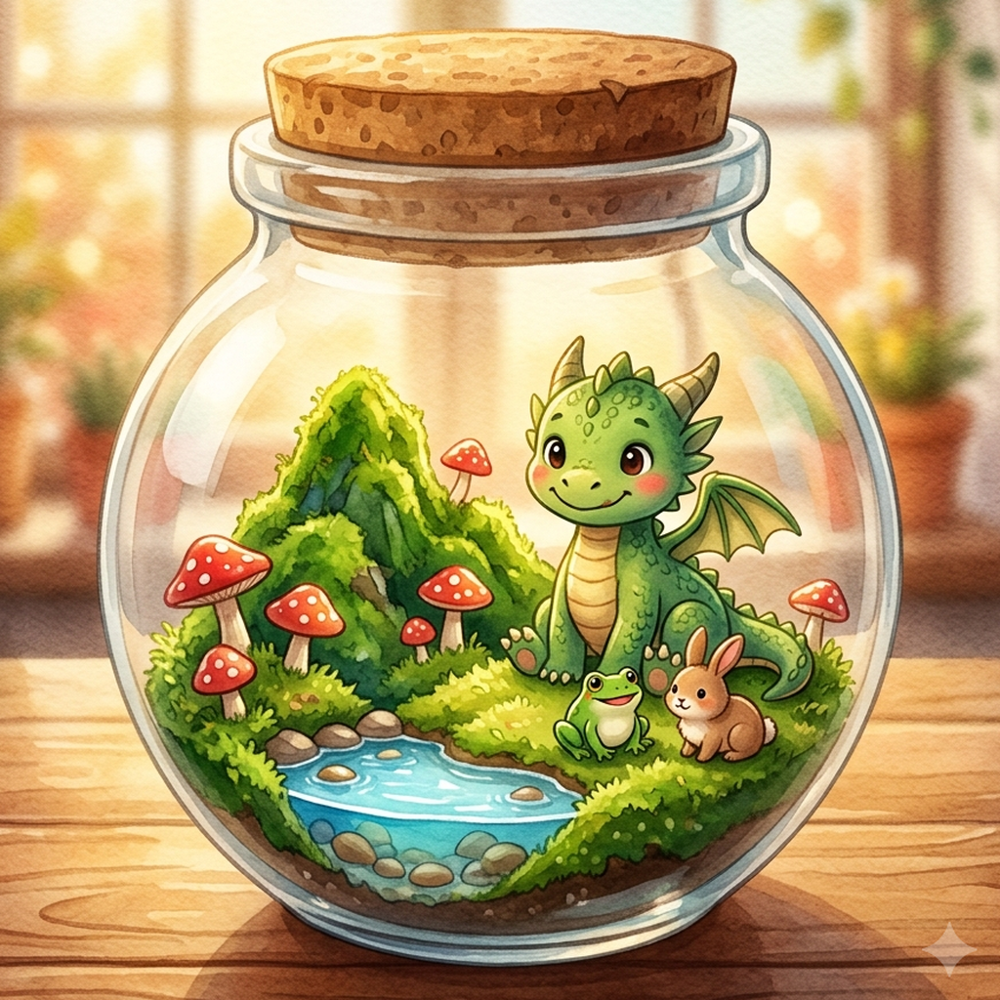

{kind=link}



{kind=link}

{kind=link}



{kind=link}

{kind=link}


落として合体、瓶の中の3D箱庭パズル ／ Critter Terrarium — Drop, merge, and keep a living jar.
| タイトル | いきものテラリウム（英語: Critter Terrarium: Merge Pets／韓国語: 꼬물꼬물 테라리움） |
|---|---|
| ジャンル | フル3Dマージパズル ×いきもの観察（“スイカゲーム系”） |
| プラットフォーム | iPhone（iOS 16.0以上。iPadは互換モードで動作） |
| 価格 | ¥160 ／ $0.99 買い切り（広告なし・追加課金なし・データ収集なし・完全オフライン） |
| 対応言語 | 日本語・英語・韓国語（ストア表記にスペイン語〈メキシコ〉も含む） |
| 配信地域 | 全世界 |
| 開発 | 個人開発（Yoshitake Hirota） |
| リリース | 2026年7月16日 |
| App ID | 6790073210 |
| サポート | support ／ privacy |
ガラスの瓶に、ちいさな生き物をぽとり。同じ子がふれあうと合体して、ひとまわり大きな子に。アリからはじまり、最後はドラゴンへ。瓶の中の12種はみんな個性AIで生きていて、あふれても蓋が閉まるだけ——中の子は生き続け、「生きた瓶」として図鑑に永久保存されます。完全オフライン・広告なしの買い切り¥160。
「いきものテラリウム」は、ガラスの瓶の中に生き物を落として合体させる、フル3Dのマージパズル（スイカゲーム系）です。同じ生き物どうしがふれあうと、その場でひとまわり大きな生き物に変身。アリ→ダンゴムシ→…→最後はドラゴンへ、全12段階へと育っていきます。 舞台は平面の盤面ではありません。苔の丘・小さな池・きのこ・窓から差し込む暖かな光まで作り込んだ、ガラスのテラリウム・ジオラマそのもの。瓶は2本指で360度ぐるりと回転でき、真上から狙って落とせます。 瓶の中の12種は、それぞれ独自の行動AIを持って勝手に動きます。クマは一生に一匹だけ小さな子を狩り、ゾウは鼻先でデコピン、カバは地響きの踏みつけ、タヌキはたぬき寝入り——パズルであると同時に、小さな生態系を眺める放置・観察ゲームでもあります。 いちばんの仕掛けはゲームオーバー。瓶からあふれても、透明な蓋がネジ込まれるだけ。中の子はそのまま生き続け、「生きた瓶」として図鑑に永久保存され、いつでも360度眺められます。失敗した1回が、生きたジオラマになって手元に残ります。 買い切り¥160／$0.99。広告なし・追加課金なし・データ収集なし・完全オフライン。日本語・英語・韓国語に対応しています。
Critter Terrarium is a fully-3D "suika-like" merge puzzle set inside a living glass jar you can rotate 360° and aim into from directly above. Drop and merge 12 tiers of creatures (ant → dragon), each running its own personality AI — the bear hunts exactly one prey in its lifetime, the elephant flicks others with its trunk, the tanuki naps. When you top out, the jar isn't reset: a glass lid screws shut and everyone inside keeps living, archived as a "living jar" you can admire in 360° forever. $0.99, no ads, no IAP, fully offline. Localized in EN/JA/KO.
クリックで原寸（1320×2868）。日本語6枚・英語6枚。追加素材・別解像度もお気軽にご連絡ください。
縦動画・無音（ミュート）再生前提。右クリック等でダウンロードできます。
アリ → ダンゴムシ → カブトムシ → カエル → ハリネズミ → ウサギ → タヌキ → イノシシ → クマ → カバ → ゾウ → ドラゴン
ant → pillbug → beetle → frog → hedgehog → rabbit → tanuki → boar → bear → hippo → elephant → dragon
Yoshitake Hirota（個人開発）
Email: hanshin1653@gmail.com
プレスキット掲載のスクリーンショット・動画は記事利用可（クレジット不要）。取材・追加素材・プロモコードのご要望はお気軽にどうぞ。